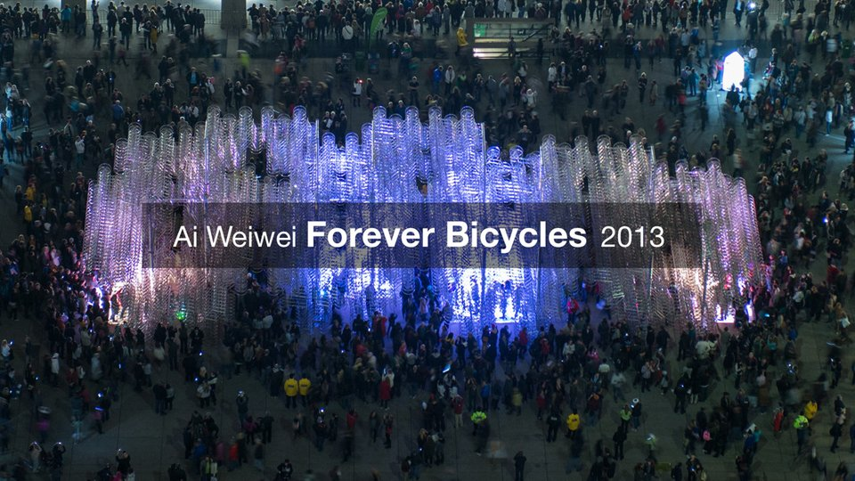

"Discovering Vancouver"

I spent six weeks exploring the city of Vancouver. When I set out, I wanted to learn new skills in a fresh place. When I arrived I was completely captivated by the beauty of the city. It provided constant adventure.
Flowing from the ground to the top of Lions Gate Bridge, I am aim to show you an unseen view.
"Forever Bicycles"

The City of Toronto commisioned me to shoot and edit a video documenting the installation of Ai Weiwei's Forever Bicycles for Scotiabank's Nuit Blanche.
This project, for me, was one that when you sleep you dream about it--fully immersed. Living it; breathing it; I watched the structure come alive from the ground up. 3,144 bicycles, the most Weiwei has used of this work to date, were stacked 100 feet in length and 30 feet high in Toronto's Nathan Phillips Square.
"Planet Toronto"

Over the years I have been inspired by my personal travels and popular documentaries like Planet Earth. After completing Toronto Tempo I had the opportunity to jump around to many different countries and work on diverse and intriguing projects. When I came back to Toronto I was approached by Tourism Toronto to create a short piece on the city. I felt like it was the perfect opportunity to push my shooting style by employing a purely observational perspective.
It was my intention to capture the city in distinct form. I wanted to make this piece different.
"Trading Nirvana"

Like my plans for the trip, Trading Nirvana made itself up as I went along. I focused on shooting interesting situations, and tried to allow each scene to tell its own story rather than conforming to something preconceived. The result is a collection of meaningful experiences that give a different perspective on everyday situations. I augmented the shots by playing them both backwards and forwards, sped up and slowed down. Most of these scenes take place in Myanmar, Thailand, Vietnam and China.
"Toronto Tempo"

I love this city. As tribute, I've pieced together thousands of photos that I think capture Toronto's beautiful skyline, and the essence of the lively downtown core. All but one of the scenes in this time-lapse were shot between September and October.
"Moments in China"

Moments in China is a collection of vivid moments I experienced while traveling around China last month. The piece flows from Hong Kong to Beijing, and visits Guilin, Shanghai, and Guangzhou. Some moments are more significant than others, but I have a personal connection with each. The video is particularly special to me because it was a personal project amid months of work.